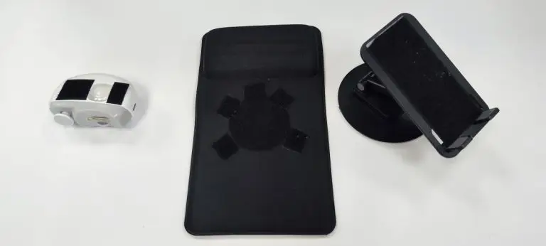
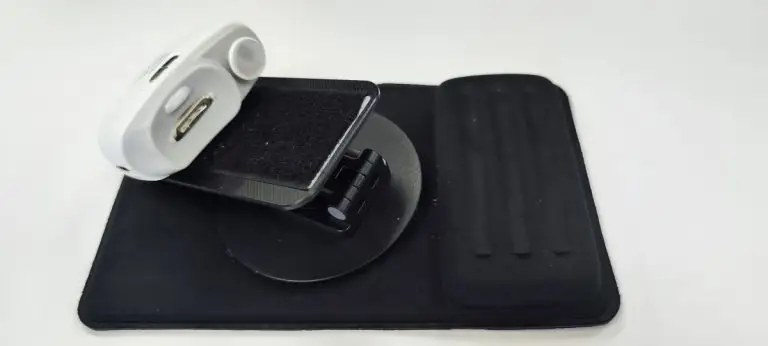

DIY Assistive Technology: A Nail Trimmer for Stroke Survivors
Everyday tasks we take for granted, like cutting our nails, can become major hurdles for stroke survivors who have lost control or strength on one side of their body. Recognizing this challenge, we’ve created a simple, cost-effective assistive technology solution using readily available components. The goal is to enable stroke survivors to independently and easily trim their nails using just one functional hand.
Materials Needed:
-
Battery-Operated Electric Nail Trimmer
You can find this device on online platforms like AliExpress, Lazada, or Shopee. Choose a trimmer that is compact, efficient, and easy to operate with one hand. They cost around SGD15 (USD11) each. -
360-Degree Adjustable Phone Holder Stand
This stand is crucial for holding and positioning the nail trimmer at an optimal angle. Make sure it has a strong, stable base and can be adjusted easily. You can find this on online shopping platforms. -
Non-Slip Mouse Pad with Wrist Pad Rest
A mouse pad with a built-in wrist rest will ensure the setup stays in place during use, preventing the trimmer from slipping while the user operates it with one hand. -
Velcro Fastening Strips
These are essential for securing the nail trimmer to the phone holder and for allowing easy removal when it needs to be cleaned or emptied.

Assembly Instructions:
-
Mount the Electric Nail Trimmer on the Phone Holder
- Cut the Velcro strips to the appropriate size.
- Use the Velcro strips to secure the electric nail trimmer onto the phone holder’s clamp. Ensure it is tightly fastened so it doesn’t move during operation.
- Attach the trimmer in a way that allows for easy removal when it’s time to empty the nail waste. Velcro strips make this possible.
-
Adjust the Trimmer’s Angle
- With the nail trimmer securely attached, use the phone holder’s 360-degree adjustment feature to tilt the trimmer to a comfortable angle for the user. The angle should make it easy for the stroke survivor to bring their hand to the trimmer and position their fingers correctly.
-
Secure the Setup on the Non-Slip Mouse Pad
- Position the base of the phone holder stand on the non-slip mouse pad, making sure the wrist pad rest is facing the side where the user’s arm will rest.
- The non-slip surface will help stabilize the entire setup and prevent it from sliding during use.

How to Use:
- Set Up and Position: Place the assembled setup on a flat surface, like a table or countertop. Ensure the trimmer is at a height and user can rest their wrist on the wrist pad at an angle that feels natural and comfortable for the user.
- Trimming Nails: Turn On the electric trimmer and user then insert their finger nail into the electric trimmer slot, which will start trimming the nail using a filing motion. The non-slip base ensures that the setup remains stable, making nail trimming easier and safer. For trimming nails on the non-functioning hand, user can either choose to detach the electric trimmer and use the functioning hand to trim the finger nails on the other hand. Alternatively, the user can use their functioning hand to guide their other non-functioning hand nails into the trimmer.
- Empty and Maintain: To clean the trimmer, simply unfasten it from the Velcro strips, empty the nail waste, and reattach it. Regular maintenance ensures smooth operation.